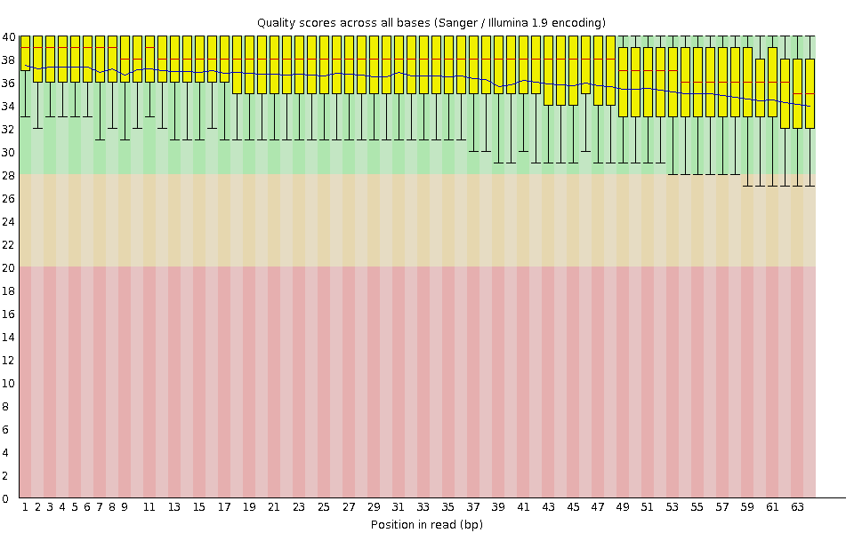
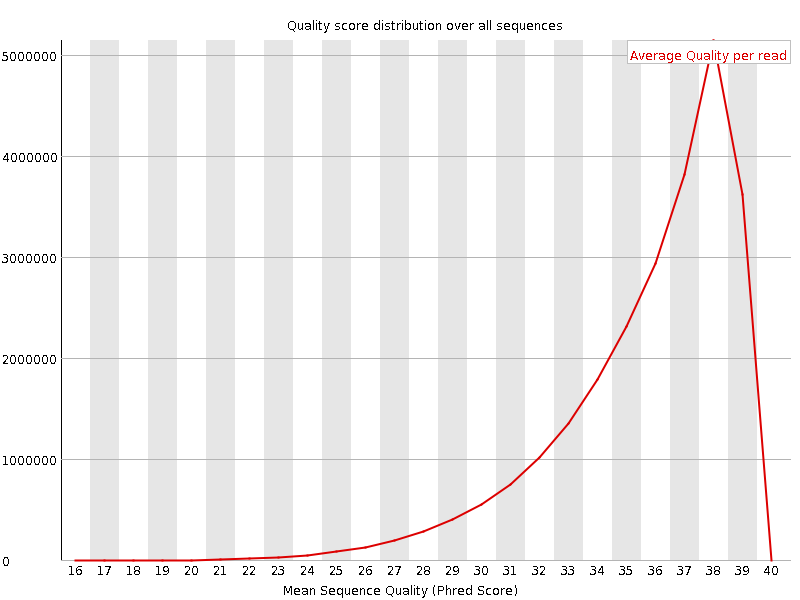
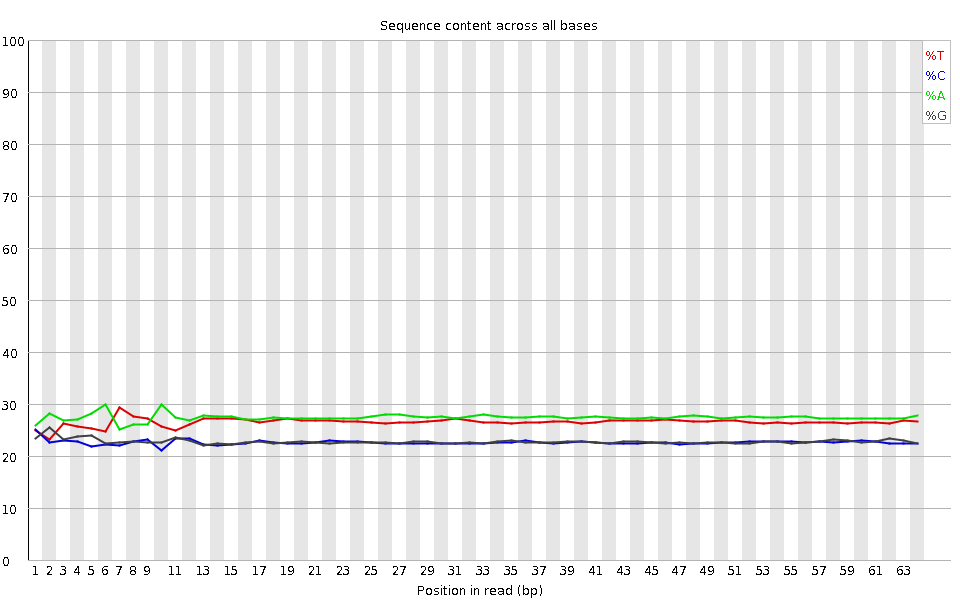
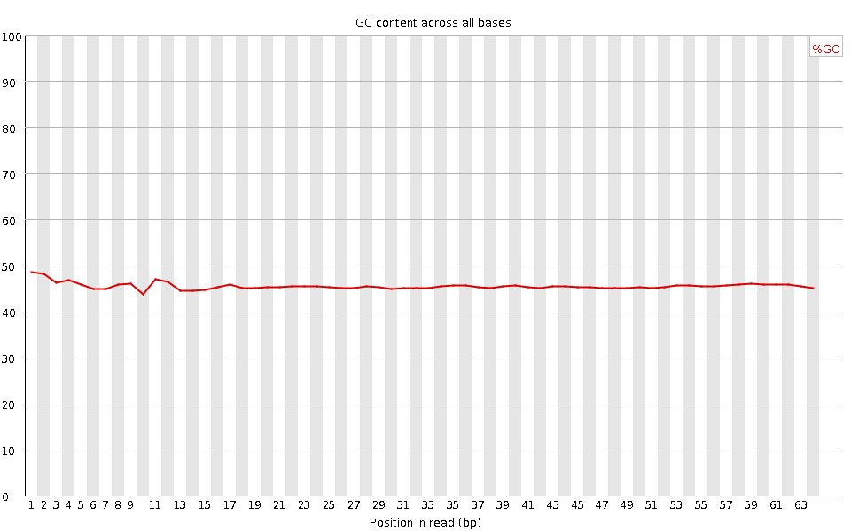
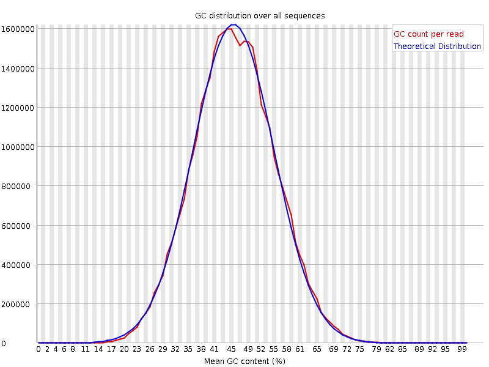
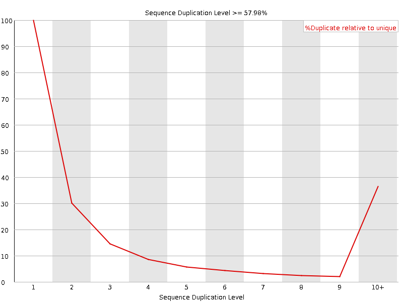
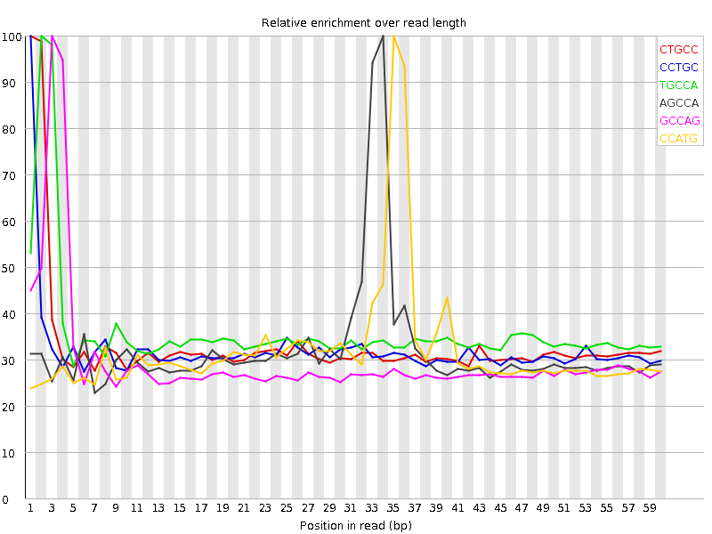

![[OK]](Icons/tick.png) Basic Statistics
Basic Statistics
| Measure | Value |
|---|---|
| Filename | SRR315336_pe_2.f.fastq |
| File type | Conventional base calls |
| Encoding | Sanger / Illumina 1.9 |
| Total Sequences | 24612295 |
| Filtered Sequences | 0 |
| Sequence length | 64 |
| %GC | 45 |
Per base sequence quality

Per sequence quality scores

Per base sequence content

Per base GC content

Per sequence GC content

Per base N content

Sequence Length Distribution

![[FAIL]](Icons/error.png) Sequence Duplication Levels
Sequence Duplication Levels

![[WARN]](Icons/warning.png) Overrepresented sequences
Overrepresented sequences
| Sequence | Count | Percentage | Possible Source |
|---|---|---|---|
| CTGCCAGTAGCATATGCTTGTCTCAAAGATTAAGCCATGCATGTCTAAGTACGCACGGCCGGTA | 71304 | 0.2897088629890061 | No Hit |
| CCTGCCAGTAGCATATGCTTGTCTCAAAGATTAAGCCATGCATGTCTAAGTACGCACGGCCGGT | 67711 | 0.27511046816235546 | No Hit |
Kmer Content

| Sequence | Count | Obs/Exp Overall | Obs/Exp Max | Max Obs/Exp Position |
|---|---|---|---|---|
| CTGCC | 2335255 | 2.1858397 | 6.581233 | 1 |
| CCTGC | 2158095 | 2.0200148 | 6.285264 | 1 |
| TGCCA | 2479430 | 1.9155303 | 5.3043036 | 2 |
| AGCCA | 2464745 | 1.8417588 | 5.7233443 | 34 |
| GCCAG | 1997155 | 1.7966027 | 5.9928293 | 3 |
| CCATG | 2310585 | 1.785086 | 5.561337 | 35 |
| GCCAT | 2221785 | 1.7164818 | 5.5448813 | 34 |
| CCAGT | 2053450 | 1.5864315 | 5.1001134 | 4 |
| GCTTG | 1474865 | 1.1705736 | 5.105438 | 16 |
| GGCCG | 933765 | 1.0112474 | 6.095978 | 57 |
| GCCGG | 795160 | 0.8611412 | 5.9562736 | 58 |
| CGGCC | 749135 | 0.8164831 | 6.042412 | 56 |
| CGCAC | 694410 | 0.62867105 | 5.003947 | 52 |
| CCGGT | 588390 | 0.54724526 | 5.012067 | 59 |